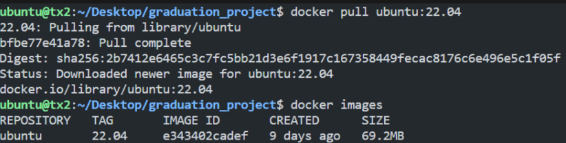
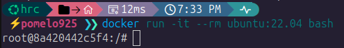
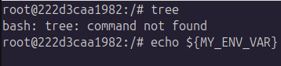
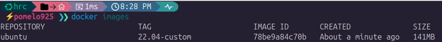

Docker¶
Docker
Docker 是一種軟體平台，讓開發者能快速地建測試和部署應用程式。
1. 學習 Docker 之前¶
所有的軟體開發或使用第一步，是建立好環境。
而 Docker 是目前使用度最廣泛的環境建置工具。
環境
所謂環境，其涉及的範圍可以從底層的硬體架構(x86, ARM)、作業系統(Linux, Windows)、CPU/GPU 型號，
到上層的驅動程式、Python 版本，或 ROS2 packages 等各種軟體工具。
1.1 設定環境比 Coding 困難?¶
環境設定有多麻煩呢？
文章賞析：Does anyone else feel like setting up environments is harder than actually programming?
假想場景：
實驗室要開發一個基於 C++ 的 ROS2 package，它內部實作使用到 Lambda 語法。
我們知道 Lambda 可以被 C++11 編譯器識別，但舊版的 C++ 98/03 不行。
因此每次在新機器測試程式碼時，我們要先設定好 C++ 編譯器。
同理包含解決各種 python package 衝突, 確認 Ubuntu 版本, CUDA version 等等。
這之間經常會遇到版本不相容、無法調用編譯器、忘記安裝某依賴項目等問題。
另外，每當同台機器要運行不同版本的程式碼，就要切換編譯器，相當麻煩。
很快地，下一章節是學習 ROS2。
假如現在規定使用 ROS2 Humble 開發，我們來看看差異：
-
不使用 Docker
- 電腦必須灌 Ubuntu 22.04 OS。 若系統為 20.04 或 24.04，只能放棄或重灌。
-
接著參考官網的 ROS2 安裝步驟。
示意圖

-
使用 Docker
- 電腦安裝 Docker。
- 輸入終端機指令
docker run -it --rm osrf/ros:humble-desktop-full bash。
小提示
Docker 環境建置快速，但更重要的是提升安全性。
使用 Docker 能隔離於本地環境，其餘細節後面會提到。
Checkpoint
安裝好 Docker，並且知道不能不學 Docker。
1.2 Docker 開發架構¶
Docker 的架構和早期虛擬機如 VMWare 等完全不同。
有興趣的可以自行查資料補充知識。
這是 Docker 的開發流程示意圖：

| 名稱 | 說明 |
|---|---|
| Dockerfile | 環境配置文件。在 Dockerfile 中宣告要安裝哪些資源以及設定環境變數。 |
| Docker Image | 映像檔。根據 Dockerfile 所建構 (build) 出來的軟體環境。 |
| Docker Container | 虛擬容器。Container 是基於 Image 所執行 (run) 的一個實體應用。 |
幾個要點：
- Dockerfile 構件成 Image 時，會使用到 CPU 資源。
- 一個 Image 可以 run 多個 Container，每個 Container 之間可以是獨立的。
- 在 Container 中的操作與宿主機 (host) 是隔離的。
所以你可以在 Container 中隨意測試，環境炸掉就把容器 remove 即可。
2. Docker 開發流程¶
Tip
先跑一次 Docker 的實際開發流程。
對整體架構有概念後，我們再回頭來學每個過程的細節。
接下來，會跑以下步驟，實際演練一下開發流程。
- 將官方 ubuntu 22.04 的 Docker Image
docker pull到本地端。 - 執行
docker run，建立一個基於官方 Docker Image 的 Docker Container 。 - 在 Container 中測試搭建新環境，並紀錄於
Dockerfile。 - 根據修改完的
Dockerfile去docker build出新版 Docker Image。
並執行基於新版 Image 的 Container，測試新環境。 - 將新版 Docker Image
docker push到 Docker Hub 上。
Checkpoint
註冊 Docker Hub。
2-1. docker pull¶
將官方 ubuntu 22.04 的 Docker Image
docker pull到本地端。
-
下載 Ubuntu Image：
docker pull ubuntu:22.04。arch 不相容性
注意 Image 在不同 ARCH 間是不相容的。
例如 AMD64 不可使用 ARM 架構 build 出來的 Image，反之亦然。示意圖

-
檢查映像檔：
docker images（ 形式是username/repository:tag）。
Checkpoint
確認自己電腦的架構，並成功 pull image
2-2. docker run¶
執行
docker run，建立一個基於官方 Docker Image 的 Docker Container。
-
運行容器指令：
docker run -it --name my_ubuntu ubuntu:22.04 bash示意圖
範例中 Container 的使用權限為
root，Container ID 為8a420442c5f4。
參數 說明 docker run建立並啟動一個新的 container -i（interactive）讓容器保持標準輸入開啟，允許互動 -t（tty）分配一個虛擬終端機，讓你有一個像真的 shell 環境 --name my_ubuntu幫這個 container 取一個自訂名字叫 my_ubuntu，方便之後操作ubuntu:22.04使用的 image 是 ubuntu，版本是22.04（即 Jammy Jellyfish）bash啟動容器後要執行的指令：這裡是 /bin/bash，讓你進入 shell注意事項：
- 跑
docker run時，系統會先找本地是否有此 Image。
若無則去 Docker Hub 上找並自動docker pull。 - 終端機前綴改變，代表進入 Container 的環境內。
現在於終端機輸入的指令，作用範圍都僅限於 Container。
- 跑
-
容器操作：
操作 指令 備註 離開但保持 container 運行 Ctrl + P→Ctrl + Q不會中斷 container 運行 離開並停止 container 運行 Ctrl + D相當於登出並關閉 container 查看所有 container docker ps -a顯示運行中與已停止的 container 重啟 container docker start my_ubuntu重啟停止運行的 container 重新進入 container docker attach my_ubuntu或docker exec -it my_ubuntu bash僅適用於已運行中的 container 停止 container docker stop my_ubuntu將 container 停止運行 刪除 container docker rm my_ubuntu完全終止 container
Checkpoint
- 在 Container 中可以輸入 Docker 相關指令嗎？為什麼？
-
使用 VSCode Extensions - Remote Developer, Docker 加速操作。
示意圖
常用功能：
- 一覽所有 Container 狀態
- 一覽個別 Container 的 Files，此為容器內資料夾目錄
- 對 Container 點擊右鍵，選 Attach Shell 可直接進入終端
- 對 Container 點擊右鍵，使用 stop, restart 以及 remove

2-3. dockerfile¶
在 Container 中測試搭建新環境，並紀錄於
Dockerfile。
-
在 Container 中，測試指令
tree以及echo ${MY_ENV_VAR}。
-
在 Container 中，安裝
tree以及設定環境變數。 -
在 Container 中，再測試一遍指令：
tree以及echo ${MY_ENV_VAR}。
顯示的輸出結果如預期，代表第 2 步的環境設定是沒問題的。 -
在 Host 中，任意資料夾中新增檔案，檔名為
Dockerfile。
Dockerfile 的語法其實很直觀，詳細教學會留到下章節。
2-4. docker build¶
根據修改完的
Dockerfile去docker build出新版 Docker Image。
並執行基於新版 Image 的 Container，測試新環境。
-
在 Host 中，瀏覽至 Dockerfile 所處資料夾，輸入構建指令。
參數 意義 docker build建立一個 Docker 映像檔（image） -t ubuntu:22.04-custom-t是--tag的縮寫，為建構出的 image 命名為ubuntu:22.04-custom--no-cache在建置過程中不使用任何快取， 每一層都會重新執行（避免使用舊的快取） .告訴 Docker 以當前目錄作為建置上下文（build context），系統會自動尋找名為 Dockerfile的文件 -
建構完成後，使用
docker images檢查。示意圖

-
測試新環境：
docker run -it --name my_ubuntu_custom ubuntu:22.04-custom bash -
輸入測試指令
tree及echo ${MY_ENV_VAR}，檢查新環境是否輸出預期結果。
Checkpoint
- 充分理解為何
ubuntu:22.04-custom能直接運行tree及echo ${MY_ENV_VAR}。 - 能再新建一個
Dockerfile，其 base image 為ubuntu:22.04-custom嗎? 需要注意什麼?
2-5. docker push¶
將新版 Docker Image
docker push到 Docker Hub 上。
-
登入 docker 帳號 (輸入username/password)
-
修改 tag 以符合上傳標準 (修改後可到
docker images查看) -
推送到 Docker Hub
Checkpoint
- 到 Docker Hub 上確認是否有 Docker Image。
- 刪除本地端多餘的 Docker Image Tag，可學習用
prune指令。 - 刪除
[username]/ubuntu:22.04-custom，並重新 docker pull 檢查是否順利。
未來要在其他機台使用此環境，就能直接 docker pull 此 Docker Image。
省去重新建置環境的麻煩！
3. Dockerfile¶
Dockerfile 學習目標
Dockerfile 的基本功能是安裝依賴項目及環境參數。
但減少容量和提升安全性也是非常重要的兩項工作。
因為 Docker 和 Compose 的學習會在有目標後，比較有方向應該怎麼做。
因此以下部分可先過目，先知道有哪些東西要學後，未來再來邊看邊學。
3-1. 基本語法¶
這裡放上幾個比較常用的 Docker 指令。當作工具書看就好。
其他沒提及的指令大部分都會在 Docker Compose 中宣告。
| 指令 | 說明 |
|---|---|
LABEL |
提供 image 的中繼資訊（例如維護者、版本、說明）。 |
FROM |
設定 base image，可用多個 FROM 來建立不同的建構階段（Stage）。 |
RUN |
執行 shell 指令，每個 RUN 會建立一層 Layer。 |
SHELL |
自訂 RUN/ENTRYPOINT/CMD 所使用的 shell，例如 ["bash", "-c"]。 |
ARG |
建構階段使用的變數（不能在 container runtime 使用）。 |
ENV |
設定環境變數，可供後續指令或應用程式使用。 |
COPY |
將檔案從 build context 複製進 image。支援 --from=stage 用於 multi-stage build。 |
USER |
指定後續指令與執行程序所使用的使用者。預設為 root。 |
WORKDIR |
設定工作目錄（自動建立目錄）。 |
ENTRYPOINT |
設定容器啟動時的主要執行指令，通常搭配 CMD 提供參數。 |
ARG 和 ENV 都是設定環境變數的指令。以下是差異：
| 項目 | ARG |
ENV |
|---|---|---|
| 定義時間 | 建構階段（build-time）變數 | 建構+執行階段（runtime）變數 |
| 可否跨 Stage | 預設無法跨 ****Stage | 可跨 Stage 繼續使用 |
| 是否進入 Image | 不會寫入 image，僅供建構用 | 會寫入 image，執行容器時仍可存取 |
| 安全性 | 比較安全，不會出現在最終 image 中 | 若含密碼等資訊，會被寫入 image |
| 用途 | 控制建構流程（例如安裝選項、版本等） | 提供應用執行所需參數或路徑設定 |
3-2. Image layer 概念¶
幾個知識點：
Dockerfile中的每個指令（例如RUN,COPY,ADD）都會建立一層 layer。- Docker 會對每個 layer 做「快取（cache）」處理，避免重複建構， 節省時間。
- layer 越多容量越大。所以我們會將相同類型的操作，合併到一個指令，以縮減容量。
範例：
## Example
FROM ubuntu:22.04
# 安裝指令(使用一個 RUN 指令)
RUN apt update && apt install -y \
build-essential \
cmake \
git \
&& rm -rf /var/lib/apt/lists/*
rm -rf /var/lib/apt/lists/* 作用 ?
當執行 apt update 時，系統會下載套件清單並暫存到 /var/lib/apt/lists/ 資料夾中。
這些快取檔案是用來告訴系統哪些套件可用、版本、來源等資訊。
套件安裝完成後，就不需要這些套件索引清單了。
所以刪除它們，以縮減一個 Image layer 的容量大小。
這是最基礎的減肥方法！
Checkpoint
了解 Dockerfile 中 \ 和 && 的用法。
3-3. user¶
預設 Docker 容器內的操作會以 root 執行，容易有安全風險。
雖然理論上容器是隔離於本地端的，但未來在 Docker Compose 中我們會配置許多參數，
開放部分權限或甚至共享檔案給容器，以方便開發用。
## Example
# 環境變數
ARG USERNAME=hrc
ARG USER_UID=1000
ARG USER_GID=$USER_UID
# 創建 UID 1000 的 USER
RUN groupadd --gid $USER_GID $USERNAME && \
useradd --uid $USER_UID --gid $USER_GID -m $USERNAME && \
apt-get update && \
apt-get install -y sudo && \
echo "$USERNAME ALL=(ALL) NOPASSWD:ALL" > /etc/sudoers.d/$USERNAME && \
chmod 0440 /etc/sudoers.d/$USERNAME && \
rm -rf /var/lib/apt/lists/*
# 切換成 User 身分 (作用範圍包含後續的構建階段和最終的容器啟動)
USER $USERNAME
3-4. 多階段構建¶
多階段構建（multi-stage build）概念
Multi-stage build（多階段建置）是 Dockerfile 的一種強大減肥功能，
主要用途是分離建構環境與執行環境，並降低映像檔大小。
Stage 概念
- 是指一份 Dockerfile 裡使用多個
FROM。 -
語法為
FROM Stage_A AS Stage_B。
其中Stage_A是前一個階段，下個階段則為Stage_B。用 Multi-Stage 語法明晰 Dockerfile 結構
即使沒有使用 Multi-Stage Build 功能，也可以單純將 Stage 語法作為標誌，表示各安裝過程的階段。
通常的流程是：
- 先
FROM base AS building- 在
building階段，安裝編譯工具。 - 對文件進行編譯。
- 在
- 再
FROM base AS release- 在
release階段，拷貝building階段編譯出的執行檔。 - 由於
release階段始於base階段，因此不會有building階段中安裝的編譯工具。
- 在
## Example
# ===== Stage 1: Build Stage =====
FROM ubuntu:22.04 AS builder
RUN apt-get update && apt-get install -y \
build-essential \
cmake \
&& rm -rf /var/lib/apt/lists/*
# 複製原始碼
COPY main.cpp /app/main.cpp
WORKDIR /app
# 編譯
RUN g++ main.cpp -o my_app
# ===== Stage 2: Runtime Stage =====
FROM ubuntu:22.04 AS runtime
# 只拷貝編譯出來的執行檔
COPY --from=builder /app/my_app /usr/local/bin/my_app
# 執行點
CMD ["my_app"]
4. Docker Compose¶
Docker Compose 功能
以結構清晰的 yaml 格式，指定運行 Docker 時的參數指令集。
4-1. Docker 檔案目錄¶
Docker 文件架構可以參考以下形式：
├── ws/ # workspace folder
└── docker/
├── Dockerfile
├── compose.yml
├── service.sh # (optional) container 服務的啟動腳本
└── run.sh # 使用者啟動腳本
先說說這種架構下的開發和使用形式：
- 要構建 Image 或啟動 Container 時，Navigate 到
docker資料夾，執行：docker compose build（意義上等同docker build+compose.yml參數）docker compose run（意義上等同docker run+compose.yml參數）
service.sh會被 mount 進 container 內，並在容器啟動後預設執行此腳本。run.sh是使用者的進入點：- 使用者 navigate 到根目錄，執行
./run.sh就能啟動整個環境。 ./run.sh會包含docker compose run指令和export一些參數。
- 使用者 navigate 到根目錄，執行
這樣的架構好處是：
- 不需要打一長串、難以修改的
docker run、docker compose指令。 - 需要修改 docker 啟動參數時，修改
compose.yml即可。 - 使用者只需要輸入
./run.sh指令，就能啟動容器，快速方便。
4-2. 定義服務¶
compose 中會定義容器的啟動服務，並配置參數。
例如指定要使用哪個 Docker Image，Image 的哪個 Stage 等等。
基本形式：
## Example
services:
# service 1 name : dev
dev:
build:
context: .
dockerfile: Dockerfile
target: release
image: hrcnthu/viperx-300s:default
container_name: dev
command: ["/bin/bash"]
# service 2 name : release
release:
# ...
| 參數名稱 | 範例值 | 說明 |
|---|---|---|
build.context |
. |
指定建構時的上下文目錄（這裡是當前目錄） |
build.dockerfile |
Dockerfile |
指定要使用的 Dockerfile 檔名 |
build.target |
release |
指定 multi-stage build 中的目標階段（stage） |
image |
hrcnthu/viperx-300s:default |
為建構出來的 image 命名。容器也會根據此 Image 啟動。 |
container_name |
dev |
指定 container 名稱（否則會自動產生） |
command |
["/bin/bash"] |
容器啟動時執行的指令（此為啟動後直接進入 bash shell） |
指令（先瀏覽到 docker/ 目錄）：
docker compose build：- 於本地構建 Docker Image
- 構建完成生成名為
hrcnthu/viperx-300s:default的映像檔；
docker compose run：- 啟動容器
- 檢查本地是否有同名的 Image，若沒有則
docker pull。
若 Docker Hub 上也沒有，則根據本地的Dockerfile構建。
邏輯其實都和原本一樣，只是使用 compose.yml 簡化流程。
若想指定服務，使用指令 docker compose run [service_name]。
若沒有指定，則跑 compose.yml 中最先定義的服務。
Checkpoint
測試 docker compose build 和 docker compose run 指令成功。
4-3. 常見配置¶
附上一些常見的配置參數。
## Example
services:
# service 1 name : dev
dev:
build:
context: .
dockerfile: Dockerfile
target: user
image: hrcnthu/viperx-300s:default
container_name: dev
command: ["/bin/bash"]
## common configurations
tty: true
network_mode: host
privileged: true
stop_grace_period: 1s
devices:
- /dev:/dev
environment:
- DISPLAY=${DISPLAY}
| 參數名稱 | 說明 |
|---|---|
tty: true |
為容器分配一個虛擬終端機（TTY），用於互動式 shell 例如 bash。 |
network_mode: host |
使用宿主機的網路設定，容器會共用宿主機的 IP 位址與通訊埠。 |
privileged: true |
啟用特權模式，容器可以存取宿主機的大部分資源（如 USB）。 |
stop_grace_period: 1s |
當容器被停止時，Docker 只等待 1 秒讓容器內的應用正常結束（發出 SIGTERM），便發出 SIGKILL。如果沒設此參數，有時需要十幾秒才會完全關閉。 |
devices: - /dev:/dev |
將宿主機的 /dev 資料夾掛載到容器內。讓容器能夠存取所有裝置（例如攝影機、串列埠等）。 |
environment:- DISPLAY=${DISPLAY} |
將宿主機的環境變數 DISPLAY 傳入容器，用於支援 GUI 程式的畫面輸出。 |
4-4. volumes¶
Docker volume 是一種把宿主機的目錄或檔案掛載（mount）到容器內特定路徑的機制。
volume 包含的檔案們，在 host 與 container 之間是共享的。
所以當我們在 container 中修改這些文件，其改動會直接連動到宿主端。
將 container 刪除後這些文件也仍然會保留在 host 中。
這功能特別適合使用在需要持續開發的程式碼，以及載入本地資源。
語法：
## Example
volumes:
# GUI
- ~/.Xauthority:~/.Xauthority:ro
- /tmp/.X11-unix:/tmp/.X11-unix:ro
# ROS2 container communication
- /dev/shm:/dev/shm:rw
# Udev rules
- /dev:/dev:rw
- /run/udev:/run/udev:ro
- /etc/udev:/etc/udev:ro
# Workspace
- ./entrypoint:/entrypoint:rw
- ../koch-lerobot:/koch-lerobot:rw
- ../ros2-ws/build:/ros2-ws/build:rw
- ../ros2-ws/install:/ros2-ws/install:rw
- ../ros2-ws/src:/ros2-ws/src:rw
哪些文件應該要放進 volume?
容器內的文件，在容器刪除後就會隨之消失。
所以在開發時要規劃，把持續更動、想保留的文件，列入 volume 範圍。